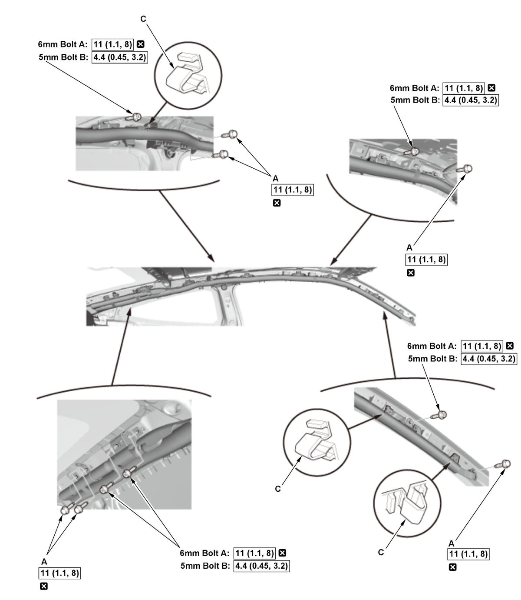
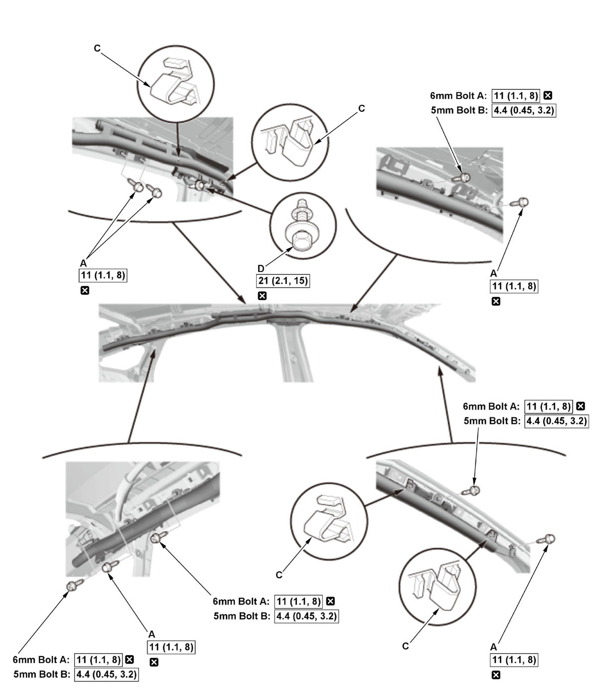

Removal and Installation
SRS components are located in this area. Review the SRS component locations and the precautions and procedures before doing repairs or service.
NOTE:
- How to read the torque specifications .
- If replacing the side curtain airbag after deployment, refer to Component Replacement/Inspection After Deployment for a complete list of other parts that must also be replaced.
- Review the interior trim replacement procedure before doing repair or service .
- 12 Volt Battery Terminal - Disconnect
NOTE: Wait at least 3 minutes before starting work.
- Headliner - Remove
- Side Curtain Airbag - Remove
2-Door 4/5-Door
1. 2-door: Remove the clips (A). 2. Pull up on both locking tabs (B) to disconnect the connector (C).
NOTE: Be careful not to damage the connector.
3. Remove the side curtain airbag mounting bolts (A), the mounting bolts (B), and the hooks (C), then remove the side curtain airbag.
NOTE:
- 4-door: Remove the side curtain airbag mounting bolt (D).
- Depending on the model, the side curtain airbag mounting bolts are either a 5 mm or 6 mm bolt.
2-Door

Courtesy of HONDA, U.S.A., INC.4-Door

Courtesy of HONDA, U.S.A., INC.5-Door
- All Removed Parts - Install
1. Install all of the removed parts in reverse order.
NOTE:- During installation, install the new side curtain airbag mounting bolts to the specified torque.
- If the side curtain airbag is frayed, or has any other visible damage, replace it. Do not attempt to repair an airbag.
- When you install the side curtain airbag, make sure it is not twisted, and that it is not caught between the inflator bracket and the bracket bolts.
- Make sure that the side curtain airbag inflator retainer is installed properly. Otherwise the side curtain airbag could incorrectly deploy and cause damage or injuries.
- If there is any damage to the side curtain airbag, do not try to repair it. Replace any damaged side curtain airbag.
- Before installing the headliner, make sure the SRS indicator works normally.
- SRS Operation - Confirm
1. Do the 12 volt battery terminal reconnection procedure, turn the vehicle to the ON mode, and check that the SRS indicator comes on for about 6 seconds and then goes off. - Headliner/Pillar Trim Overlap - Confirm